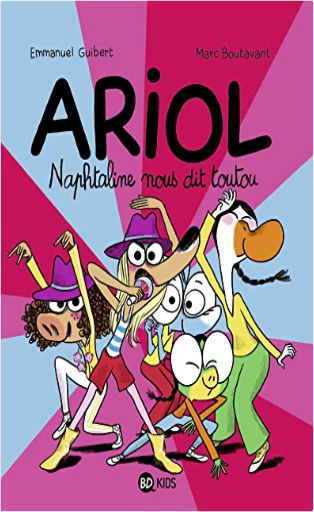
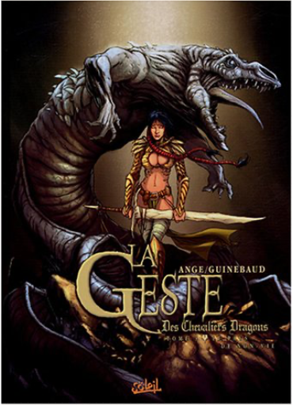

Books
Movies
Albums
Videogames
Games
BD
BD Camille
Blu-ray
Business
Camille
Comics
Cooking
Lego
Manga
Pauline
Photography
Sport
Star Wars
T'choupi
Travel
TV Shows
Un livre dont vous êtes le héro
Vinyl
Walt Disney
42
43
44
45
46
contes et comptines à toucher - un grand cerf
virginie guérin
contes et comptines à toucher - le petit chaperon rouge
christian guibbaud
Ariol, tome 8 : Les trois baudets
Emmanuel Guibert, Rémi Chaurand
Ariol, tome 10 : Les petits rats de l'opéra
Emmanuel Guibert, Rémi Chaurand

Ariol, tome 16: Naphtaline nous dit toutou
Emmanuel Guibert, Rémi Chaurand
Ariol, tome 17 : La chouette classe verte
Emmanuel Guibert, Rémi Chaurand
Ariole, tome 4 : Une jolie vache
Emmanuel Guibert, Marc Boutavant
La danse
Françoise de Guibert

la geste des chevaliers dragons, tome 3 : le pays de non-vie
sylvain guinebaud, ange
4
hey you! une histoire orale des burning heads
guillaume gwardeath, sam guillerand
star wars, tome 23 : les enfants du jedi
barbara hambly
3
Les aventures de Blake et Mortimer, tome 28 : Le dernier espadon
Jean Van Hamme, Teun Berserik, Peter Van Dongen
42
43
44
45
46


 Made with Delicious Library Made with Delicious Library
Made with Delicious Library Made with Delicious Library